Star Wars
—-—The Skywalker Saga—-—
Home
Star Wars is a massive space-opera franchise created by George Lucas, centered on the Skywalker Saga’s nine core films. It explores the timeless struggle between good and evil through the conflict between the Jedi and the Sith, blending themes of destiny, family, redemption, and the balance of power within the Force. Across generations, the story follows the rise, fall, and legacy of the Skywalker family, highlighting how personal choices can shape the fate of the entire galaxy. With its mix of mythology, adventure, and moral conflict, the saga has become one of the most influential and enduring stories in modern cinema.
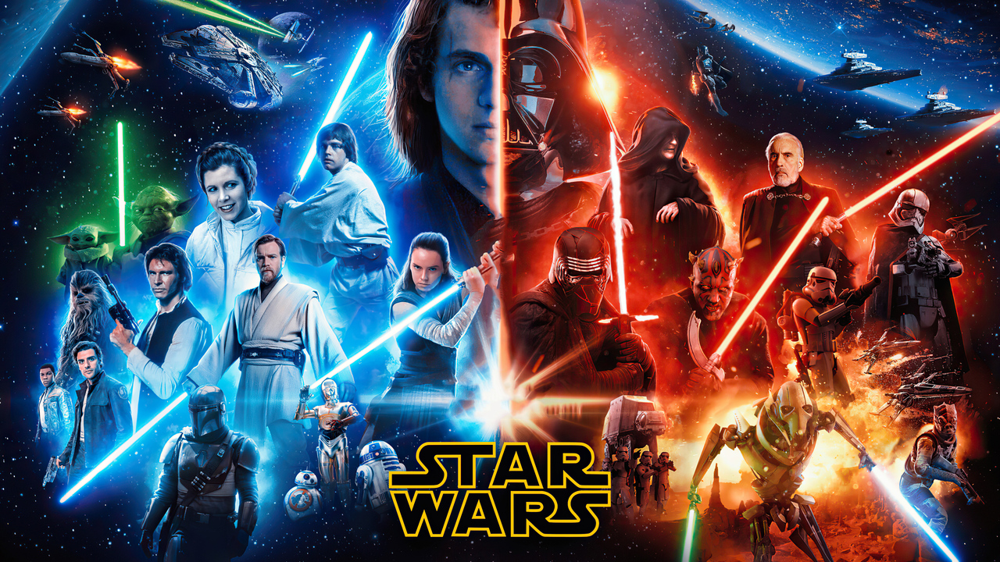
What are the movies about?
The movies are centered around the ongoing conflict between forces of light and darkness within a vast galaxy, where freedom is constantly threatened by tyranny. At the heart of the story is the journey of the Skywalker family, whose members play pivotal roles in shaping the fate of the galaxy. From the fall of the Galactic Republic and the rise of the Empire, to the rebellion that seeks to restore hope, and the later struggle against a new authoritarian regime, each trilogy builds upon the last. Along the way, characters face challenges that test their courage, loyalty, and identity, showing how choices—both heroic and misguided—can have lasting consequences across generations.
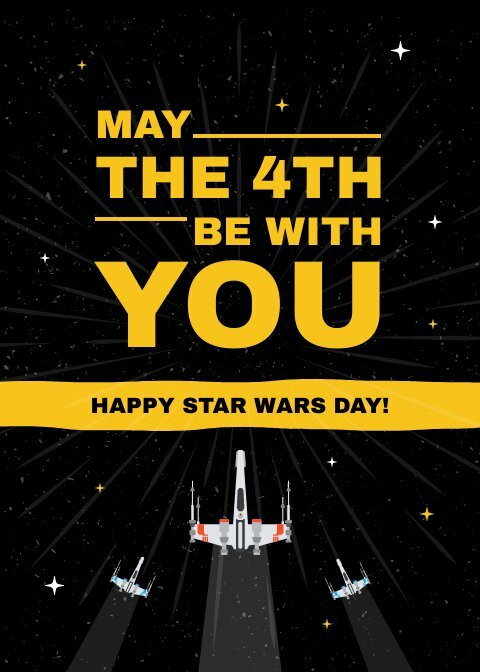
The Popularity of Star Wars
Star Wars became an icon of Geek culture, growing far beyond its original films into a global phenomenon that has influenced generations of fans. Its memorable characters, groundbreaking special effects, and imaginative storytelling helped redefine what science fiction could achieve in cinema. Over time, the franchise built a passionate community through conventions, merchandise, books, and spin-off media, allowing fans to stay connected to the galaxy far, far away. Quotes, music, and imagery from the series have become instantly recognizable, making Star Wars not just a set of movies, but a lasting cultural legacy that continues to shape entertainment and inspire new audiences.
The Skywalker Saga
The Skywalker saga is the central storyline of Star Wars, spanning nine films divided into three trilogies: the Prequel Trilogy, the Original Trilogy, and the Sequel Trilogy. The list below organizes each movie by its respective trilogy, highlighting the progression of the story across different eras of the galaxy.
- Original Trilogy
- A New Hope
- The Empire Strikes Back
- Return of the Jedi
- Prequel Trilogy
- The Phantom Menace
- Attack of the Clones
- Revenge of the Sith
- Sequel Trilogy
- The Force Awakens
- The Last Jedi
- The Rise of Skywalker
Chronological order or release order?
It can be confusing to first-time watchers to decide how to experience the Skywalker Saga, as the films were released in a different order than the events that occur in the story. Some viewers prefer to watch in release order to follow the original storytelling and reveals as audiences first experienced them, while others choose chronological order to see the timeline unfold from beginning to end. The table below provides a simple guide to both approaches, listing each film by episode number and release date to help you decide which viewing order works best.
| Film |
Episode |
Year |
Main Character |
| A New Hope |
IV |
1977 |
Luke Skywalker |
| The Empire Strikes Back |
V |
1980 |
Luke Skywalker |
| Return of the Jedi |
VI |
1983 |
Luke Skywalker |
| The Phantom Menace |
I |
1999 |
Anakin Skywalker |
| Attack of the Clones |
II |
2002 |
Anakin Skywalker |
| Revenge of the Sith |
III |
2005 |
Anakin Skywalker |
| The Force Awakens |
VII |
2015 |
Rey |
| The Last Jedi |
VIII |
2017 |
Rey |
| The Rise of Skywalker |
IX |
2019 |
Rey |
Characters:
Click on the image for more information about the character
Original Trilogy
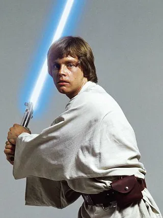
Luke Skywalker
Luke Skywalker is a central hero of the Original Trilogy, beginning as a simple farm boy on Tatooine who dreams of adventure. As he trains in the ways of the Force, he grows into a powerful Jedi Knight committed to restoring peace to the galaxy. Throughout his journey, Luke struggles with doubt and the temptation of the dark side, especially as he learns the truth about his family. His belief in redemption ultimately plays a crucial role in defeating the Empire and bringing balance to the Force.
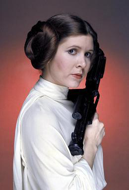
Leia Organa
Leia Organa is a fearless leader and key figure in the Rebel Alliance, known for her intelligence, determination, and strong sense of justice. As a princess of Alderaan and later a general, she dedicates her life to fighting oppression and restoring freedom to the galaxy. Despite facing personal loss and constant danger, Leia remains resilient and inspiring to those around her. She is also strong in the Force, carrying on the legacy of her family in her own way.

Han Solo
Han Solo is a charming smuggler turned hero, known for his wit, confidence, and reluctance to get involved in larger causes. Initially motivated by personal gain, he gradually becomes a loyal ally to the Rebellion and a trusted friend to Luke and Leia. His journey shows significant growth, as he learns to care about something greater than himself. Alongside his co-pilot Chewbacca, Han plays a vital role in many of the Rebellion’s victories.
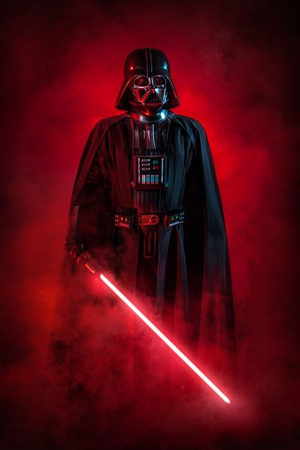
Darth Vader
Darth Vader is one of the most iconic villains in cinema, serving as a powerful enforcer of the Galactic Empire. Once a promising Jedi Knight named Anakin Skywalker, he falls to the dark side after being consumed by fear, anger, and a desire for control. As Vader, he becomes a symbol of fear and authority, hunting down the remaining Jedi and crushing opposition. Despite his actions, his story is ultimately one of redemption, as he is able to return to the light through the influence of his son, Luke.
Prequels Trilogy

Anakin Skywalker
Anakin Skywalker is a central figure of the Prequel Trilogy, introduced as a gifted young boy with an unusually strong connection to the Force. Trained as a Jedi, he shows great potential but also struggles with fear, attachment, and inner conflict. His desire to protect the people he loves ultimately leads him down a dark path. Anakin’s transformation into Darth Vader marks one of the most important turning points in the saga.
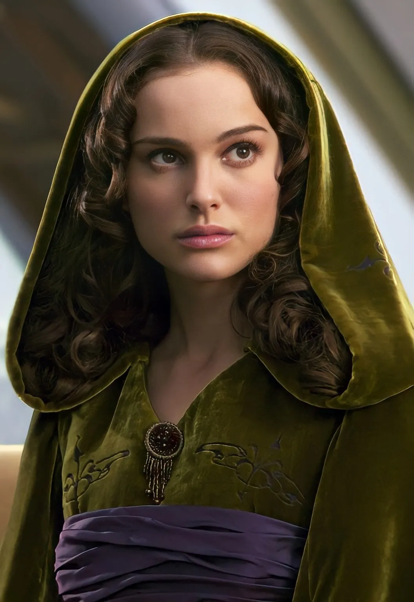
Padme Amidala
Padmé Amidala is a courageous and compassionate leader who serves as both Queen and Senator of Naboo. She is dedicated to peace, diplomacy, and the well-being of others, often standing firmly against corruption and war. Throughout the Prequel Trilogy, she plays a key role in the political struggles of the galaxy. Her relationship with Anakin Skywalker is deeply important, influencing both his greatest joys and his eventual downfall.
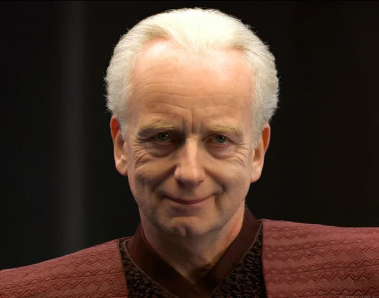
Sheev Palpatine
Sheev Palpatine is the mastermind behind the rise of the Galactic Empire, secretly operating as the Sith Lord Darth Sidious. Using manipulation, patience, and political strategy, he engineers conflict to gain power and control over the galaxy. Publicly, he appears as a respected leader, eventually becoming Chancellor and then Emperor. His influence leads to the fall of the Jedi Order and the corruption of Anakin Skywalker, making him one of the most dangerous figures in the saga.
Sequels Trilogy
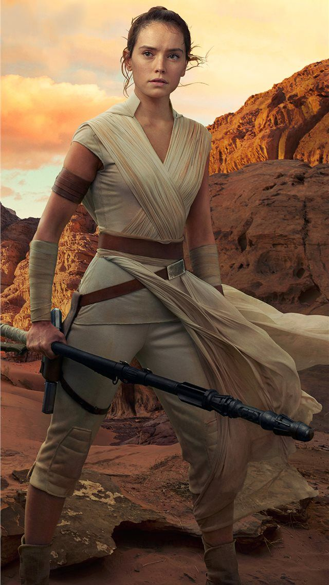
Rey
Rey is the central protagonist of the Sequel Trilogy, introduced as a scavenger surviving on the desert planet Jakku. Despite her lonely beginnings, she possesses a strong connection to the Force and a natural sense of compassion and determination. As she becomes involved in the Resistance, Rey seeks to understand her identity and place in the galaxy. Her journey focuses on self-discovery, resilience, and the choice to stand for hope and balance.
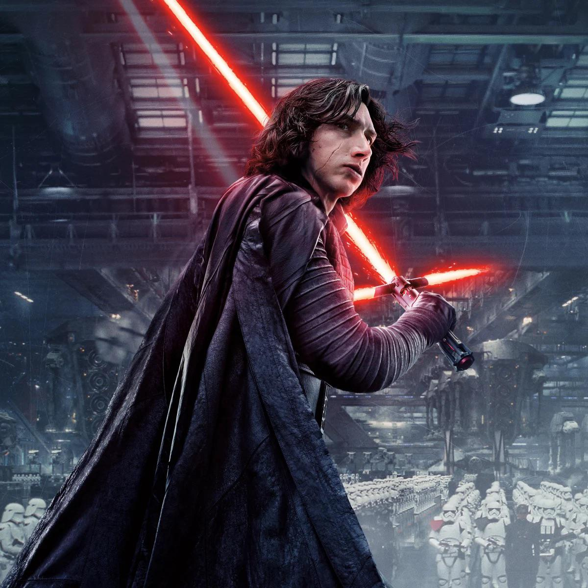
Ben Solo/Kylo Ren
Ben Solo, also known as Kylo Ren, is a conflicted character torn between the light and dark sides of the Force. As the son of Leia Organa and Han Solo, he carries a powerful legacy but struggles with feelings of doubt and anger. Under the influence of Supreme Leader Snoke, he turns to the dark side and becomes a leader within the First Order. His story is one of inner conflict and redemption, as he ultimately confronts his past and identity.
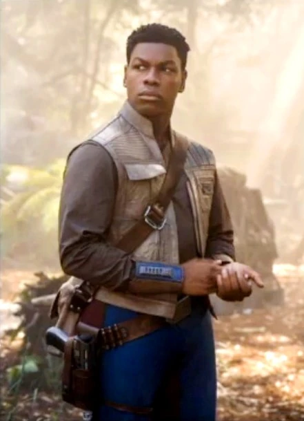
Finn
Finn is a former stormtrooper who chooses to break free from the First Order after realizing the harm it causes. Unlike those around him, he refuses to follow orders that go against his sense of right and wrong. Throughout the trilogy, Finn grows into a brave and loyal member of the Resistance. His journey highlights themes of courage, individuality, and the power of choosing one’s own path.
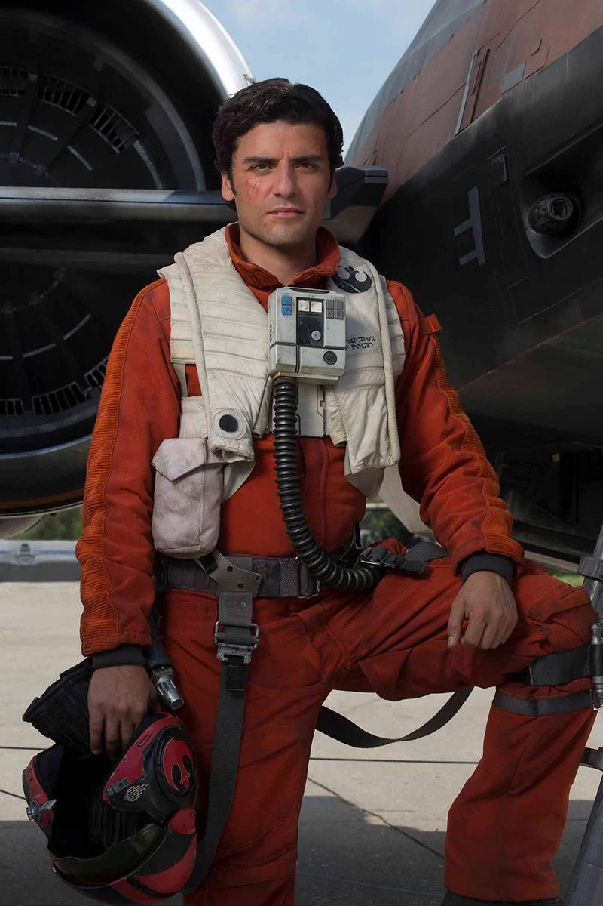
Poe Dameron
Poe Dameron is a skilled pilot and a key leader in the Resistance, known for his bravery and confidence in battle. He plays a major role in fighting against the First Order, often taking bold risks to achieve victory. While his determination sometimes leads to reckless decisions, he learns the importance of leadership and responsibility over time. Poe’s character represents courage, loyalty, and the drive to inspire others in the fight for freedom.
Honorable mentions
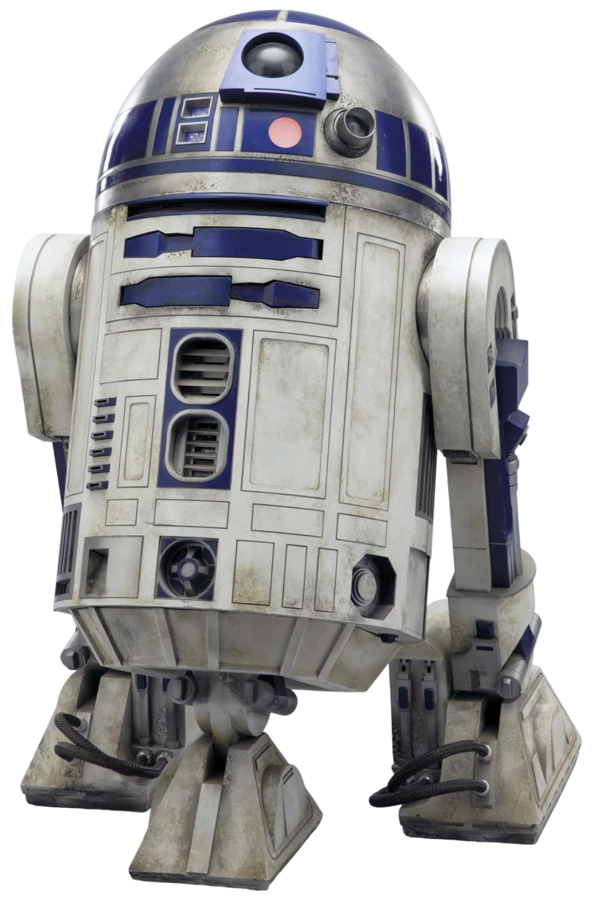
R2-D2
R2-D2 is a resourceful astromech droid known for his loyalty and quick thinking. Throughout the saga, he plays a key role in assisting the main heroes, often saving them in critical moments. Despite only communicating through beeps and whistles, his personality is clear and full of determination. He remains a constant presence across all three trilogies.
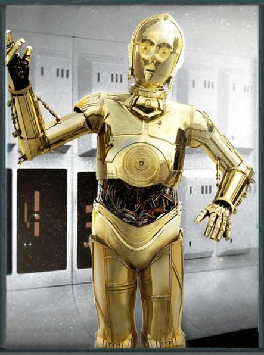
C-3PO
C-3PO is a protocol droid designed for etiquette and translation, fluent in millions of forms of communication. He often provides comic relief with his anxious personality and tendency to worry in dangerous situations. Despite his fearfulness, he remains loyal to his companions and frequently finds himself involved in important events. His partnership with R2-D2 is one of the most recognizable duos in the saga.
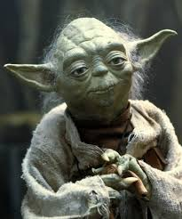
Master Yoda
Yoda is a wise and powerful Jedi Master who serves as a teacher and guide to many Jedi, including Luke Skywalker. Known for his unique way of speaking, he emphasizes patience, discipline, and balance in the Force. Despite his small size, he is incredibly strong in the Force and highly skilled in combat. Yoda represents the wisdom and traditions of the Jedi Order.
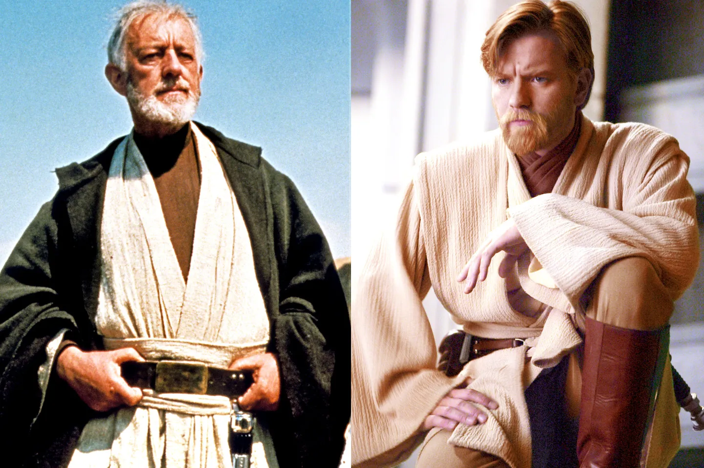
Obi-Wan Kenobi
Obi-Wan Kenobi is a respected Jedi Master and mentor who plays a crucial role in both the Prequel and Original Trilogies. He trains Anakin Skywalker and later guides Luke Skywalker in the ways of the Force. Known for his calm demeanor and strong moral values, he remains dedicated to the Jedi principles even in difficult times. Obi-Wan serves as a symbol of guidance, responsibility, and hope throughout the saga.
Share with us!
For more information about the world of Star Wars, you can click here to access the official website.
Betsabeth U. | ICT-280